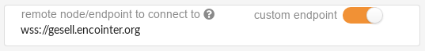
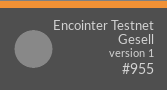

Introduction
This is becoming the main documentation resource for Encointer. It is work in progress.
For now, please refer to the whitepaper
Economics
This chapter shall be an opinionated interpretation of the status quo and what we expect to acheive with Encointer.
The Cantillon Effect
Richard Cantillon is known for his analysis on the effects of a change in money supply in a state on inequality. Around the year 1730 he wrote in his Essay sur la nature du commerce en général:
If the increase in actual money comes from the state's gold and silver mines, the mines' owner, the entrepreneurs, the smelters, the refiners and generally all those who work in them will increase their expenditure in line with their gains. At home they will consume more meat and wine or beer than they used to, and they will become accustomed to having better clothes, finer linen, and more ornate houses and other sought-after commodities. Consequently they will give employment to some craftsmen who hitherto had not as much work and who, for the same reason will increase their expenditure. All if this increased expenditure on meat, wine, wool, and the like will necessarily reduce the share of other people in the state who are not the initial beneficiaries from the wealth of the mines in question. The bargaining in the market, with the demand for meat, wine, wool and the like being stronger than usual, will not fail to increase their prices.
Nowadays, money supply isn't affected by mining gold and silver. It's the banks that issue money as credit - out of nothing. Translating Cantillon into our time, we should replace miner by banker. The rest of the story still applies. However, in spite of quantitative easing we don't see much price inflation for essential goods. This effect can be explained by observing that all this newly issued money never reaches the masses.
Encointer aims at inverting the Cantillon Effect. Instead of issuing money at the top, as credit to businesses and creditworthy individuals, we issue money at the bottom. Every individual gets a universal basic income: freshly issued money.
Universal Basic Income
A universal basic income (UBI) is a modest amount of money paid unconditionally to individuals on a regular basis (Standing). Most advocates of UBI aim at introducing it at a national level, as a monthly income to all legal (fiscal) residents and paid out in cash (denominated in national currency). Usually, a UBI is suggested to be financed by some form of taxation. As Van Parijs & Vanderborght explain, a national UBI may lead to justice among thieves (achieving more equality within a wealthy nation while there’s staggering inequality globally). They therefore argue for a global UBI, as do WBI or GBI.
Encointer aims at providing a global UBI in terms of units of cryptocurrency created on a regular basis and distributed to individuals (almost) unconditionally. Let’s examine the characteristics of such an encointer-UBI:
universal
Encointer is paid out to every human being able and willing to attend encointer meetus every 41 days and in posession of a smartphone. This unfortunately excludes persons with certain disabilities as well as those without a smartphone. Also, the need to travel to meetups comes at varying cost, depending on local population densities – a disadvantage to people living in remote areas. While this is not exactly unconditional, we think it is less exclusive on a global scale than introducing national UBI schemes in few wealthy nations. Moreover, encointer might promote the concept of UBI and pave the way for institutionalized national or global UBI.
basic
Nothing in the definition of UBI defines a specific amount. However, it is often understood to be sufficient to cover basic needs and therefore provide economic security to its beneficiaries. In order to do so, it should also be stable. Encointer is a new cryptocurrency with algorithmically defined monetary supply. Only the (global) market can define its purchasing power. global vs local currency
Cryptocurrencies based on public unpermissioned blockchains are global by nature. Encointer is such a cryptocurrency – with the important added feature of allowing local currencies to be issued, as will be discussed below. Encointer is paid out in equal nominal amounts to every individual. Technically, there is no decentralized way of doing otherwise as the P2P network has no awareness of national borders or the cost of living. As a means for UBI this is a mixed blessing. If UBI is expected to be suffient to cover basic needs there is no way to achieve this goal with a global currency. Purchasing power of one unit of global currency would vary hugely among different regions. The upside being that the UBI’s purchasing power is in that case expected to be higher in weaker economies, therefore reducing global inequality.
Because Encointer issuance involves meetups with known geolocation, it is technically feasible to issue local currencies which are algorithmically bound to high-interaction communities (though ignorant of national borders). This would allow the UBI to be denominated in a currency which is meant to be used within local ecosystems yet freely tradable globally. real value
The purchasing power of a unit of local encointer currency is market-based. It isn’t backed by gold or trust in some nations central bank. It’s value is determined by its usefulness as a store of value, medium of transfer or unit of account. Depending on national circumstances, the usefulness of encointer can vary. Where large parts of the populations are unbanked, encointer could complement national currency because it is accessible to everyone and more convenient to use and store than cash.
Another angle from which to define value could be international development aid. Encointer would allow to distribute aid to individuals living in a specified area directly by buying their local currency. It would even be possible to buy such local currency at fixed rates, thereby ensuring a stable value of that local currency. Administrative cost and misappropriation of development aid could be reduced significantly.
income
Encointer delivers an income in a fixed nominal amount of digital currency, paid (or issued) in regular intervals (for every ceremony meetup attended, happening in fixed intervals of 41 days) to all participating individuals. This income is obligation free and is given to the rich and the poor alike.
This income is paid for by issuing money and therefore by nominal inflation of encointer currency. The absolute nominal inflation rate depends on the number of ceremony meetup participants. And there is a correcting factor: Demurrage!
Literature
- Guy Standing, Basic Income: And How We Can Make It Happen
- Van Parijs & Vanderborght, Basic Income – A Radical Proposal for a Free Society and a Sane Economy
Demurrage
Encointer currencies feature nominal demurrage: All balances get devalued over time. The funds you’re holding lose 7% of their nominal value every month. Think of this devaluation like a payment to a solidarity fund that pays for the UBI. This way, Encointer can issue monthly UBI and still maintain stable money supply as shown by the simulation in the figure below. Another advantage of demurrage has been described by Silvio Gesell when he proposed Freigeld in 1916: Demurrage increases money velocity, which in turn fuels the local economy.

Money supply for a stationary economy with a demurrage fee of 7% per month and a population of 10’000 participants. After an initial phase, the UBI of 1 token per ceremony maintains a constant ratio to the total money supply and therefore maintains a constant real value.
Local Currencies
Cryptocurrencies are fundamentally global in nature. Their networks are decentralized and don't care for national borders. But global currencies have a severe disadvantage: Their purchase value can evolve very differently in different regions. The Euro is such an example that is the official currency in many european countires with distinct fiscal policies and economic development. While there are political reasons to favor such a unifying currency, many economists doubt the concept. States with less economic growth have no option of devaluing their national currency. They can only get into debt - and then get forced into austerity, further weakening their economy.
Local currencies on the other hand are mainly affected by local economy.
Real Examples
Wära Schwanenkirchen
TODO
AB-Schein Wörgl
During the great depression, the austrian village of Wörgl attempted a monetary experiment to fight deflation: A complementary local currency.
| denomination | Schilling (1:1 national currency) |
| issuance | by the muncipality, as partial salary for infrastructure work |
| backing | full reserve in Schilling |
| demurrage | 12% / year linear pro rata |
| reimbursement fee | 2% |
| date | 1932 until prohibited in 1933 |
Observed Impact:
- lower unemployment (-16% while elsewhere +19% in 1933)
- 8-10x money velocity
- improved infrastructure: bridge, ski-jump, streets
Chiemgauer
| denomination | Euro (1:1 national currency) |
| issuance | by Chiemgau association, in exchange for Euro |
| backing | full reserve in Euro |
| demurrage | 8% / year linear pro rata |
| reimbursement fee | 5% (of which 3% go to local associations chosen by buyers of Chiemgauer) |
| date | 2003 until now |
WIR
WIR is rather a reciprocal exchange network (barter ring) - but it is an official currency (CHW). It is only open to businesses, not private persons.
| denomination | CHF (1:1 national currency) |
| issuance | by WIR bank as credit (with low interest rate) |
| backing | mixed-asset backed |
| demurrage | none |
| reimbursement fee | reimbursement prohibited, you have to spend it |
| date | 1934 until now |
TBC....
Encointer Protocol
The Encointer protocol is what ensures that
- only humans get a UBI
- every human can only get it once
We call the result of this protocol a unique proof of personhood.
Encointer leverages the fact that every person can only be in one place at one time. Every 41 days, participants are requested to attend physical key-signing meetups with small groups of random people. Because all meetups happen as one global ceremony all on the same day at the same local time, no one can attend two meetups.
The formal definition of the protocol can be found in our whitepaper
Threat Model
Actor Profiles
We categorize users into the following psychological profiles for later scenario analysis:
Honest 
Will comply with the rules
Greedy 
Will try to cheat the system for his/her own benefit. Will collude with others
Strategies:
- Get reward without showing up
- Sign sybil id's to collect more rewards
Saboteur 
Will try to hurt the system, even if this comes at a cost. Will collude with others
Strategies:
- turn meetups invalid
- demoralize other participants by preventing them to get reward
More Roles
Sybil 
An identity that has no bijectively exclusive relationship with a participant. It can however have a bijectively exclusive relationship with a person who doesn't attend any meetup.
Manipulable 
An honest person that can be convinced to break the rules by social pressure. Will not strive for economic benefit.
Collusion Organizations
evil.corp
An organization of the greedy or saboteur participants.
Strategies:
- undermining randomization by sharing information and key pairs to allow collusion attacks at meetups
Assumptions
We assume
- The majority of ceremony participants with reputation sending their signed claims to the blockchain location is honest.
Reputation here means having attended at least one of the last two ceremonies and having been rewarded.
Rule Design
When designing rules there's a tradeoff beween preventing either the greedy or the saboteur's success. We can introduce very restrictive rules that will successfully prevent sybil attacks by the greedy, but these will make it very easy for the saboteur to demoralize participants by turning meetups invalid deliberately.
Rules
TODO: This is work in progress....
Meetup Assignment
- A meetup has at least 3 assigned participants
- A meetup has at most 12 assigned participants
- Only 1/4 of assigned participants may have zero reputation (be newcomers)
- this rule directly impacts the maximum adoption rate. A population of 1M will take at least log(1M/12)/log(4/3) <= 40 ceremonies
Meetup validation
- (NEEDED?) The signature reciprocity is at least X
- (NEEDED?) The reciprocal edge connectedness is at least M-2, where M is the number of participants with at least one signature by another party.
- (OK) At least two participants signed each other mutually
- (OK) Disqualify a participant if her vote is not equal to the number of participants signed by her.
UBI/Reward Issuance
In order to receive a UBI, a participant
- (OK) must be registered and assigned to the meetup
- (OK) the meetup must be valid
- (TODO: ARGUE THRESHOLD) must have her claim signed by at least 1/3 of registered participants
- (OK) must have signed the participants that are necessary to fulfill rule above in return
Remote Attacks
Flooding Attack
An adversary could register large numbers of fake participants who will never show up. This could prevent legit persons to participate.
Mitigation:
- Limit the number of assigned participants with no reputation
Non-Protocol Threats
Aggression, Detention
If meetup locations are publicly known, participants could face aggression from saboteurs or they could be detained if participation is suddenly judged illegal.
Mitigation:
- The set of possible meetup locations has to be significantly larger than the need in order to host all participants.
Abduction
If celebrity meetup participants can be linked to their names and meetup locations in advance, they might get kidnapped
Mitigation:
- Make sure meetup assignments are kept confidential at least until the meetup has passed.
Behavioural Meetup Scenario Analysis
The scenario analysis is structured by the number of participants who were assigned to a meetup
3 Registered Participants
Happy Flow
All participants only sign for persons present at meetup location.

reciprocity = 1.0
reciprocal edge connectedness = 2
Noshow of one is treated with mercy for attendees

reciprocity = 1.0
reciprocal edge connectedness = 1
Attacks
Social Engineering
Adversary B talks A into signing his sybil ID

reciprocity = 1.0
reciprocal edge connectedness = 2
As there is no honest participant in this meetup, this attack is out of scope of our threat model.
Mitigation
- randomized meetups should reduce the chance that someone could be assigned with his sybil to the same meetup. In weakly populated areas, this can happen easily though
this scenario violates threat model assumptions
Exclusion
Adversary B refuses to sign A and signs C instead

A variant of this would be that B isn't even present at the meetup
reciprocity = 0.5 (1.0)
reciprocal edge connectedness = 1
Mitigation none
- randomized meetups should reduce the chance that someone could be assigned with his sybil to the same meetup. In weakly populated areas, this can happen easily though. evil.corp could also increase chances.
- Only allow meetups with more participants (>=4?) in order to reduce the impact of a single participant on outcome.
this scenario violates threat model assumptions
4 Registered Participants
Oversigning

Variant:
- B and C are not present at meetup, removing the reciprocal edges to A
reciprocity = 1.0
reciprocal edge connectedness = 2
Mitigation:
- (NOK) Introduce Reputation (previous attendance to successful meetups)
- (NOK) Introduce Rule "lowest vote with reputation wins" * This rule, however, will cause B, C, and D to vote "3" showups and to refuse to sign A. Reputation doesn't help because B and C could have reputation as well.
- (NEEDED?) quarantine non-consistent meetups
At this meetup, 3/4 of registered participants are malicious.
this scenario violates threat model assumptions
Oversigning light

reciprocity = 1.0
reciprocal edge connectedness = 1
Mitigation
- only accept subgraph with recipr. edge connectedness of M-2 for M=4 here. This will cut off D.
Location Spoofing

C and D could pretend to be at the meetup location. The ceremony validation has no way to know if A-B is legit or C-D.
Variants:
- D could be a real person colluding with C
Probability:
- low because of randomization if number of meetups assigned is high
- evil.corp could redistribute sybil id's after meeting assignments, undermining randomization
Mitigation:
- (NOK) track participant locations and require plausible movement trajectories before meetup. not sound because it is easy for C+D to spoof realistic trajectories
- (NEEDED?) Quarantine: The validator can detect that the meetup is split and therefore not consistent. Issuance could be conditional to future ceremony attendance
- (OK) The pair with higher reputation wins, the other doesn't get a reward issued.
- (NOK) invalidate non-consistent meetups, preventing 2 illegit rewards while demoralizing 2 honest participants.
At this meetup, 1/2 of registered participants are malicious.
5 Registered Participants

Mitigation:
- Disqualify participant if vote != number of peers she signed

Mitigation:
- none, if C,E,D all have reputation. the majority can always win.
This violates threat model assumption 1
Conclusion
As long as the threat model assumptions are held, we can find a set of rules that prevents:
- issuing more rewards than there are honest participants (while there is no guarantee that every honest participant will get a reward in face of malicious behaviour)
The probability that you as a participant experience a meetup with evil majority follows the poisson cumulative distribution function:
Given the overall proportion of malicious actors , the probability that you (being an honest actor) will suffer from malicious behaviour at one specific meetup depending on the number of participants in your meetup n is

Decentralization
TODO
Blockchain
Security
Governance
Privacy
Testnets
Encointer maintains two testnets: Gesell and Cantillon.
The networks differ in their goals and designs:
Gesell
Aimed at automated testing of the protocol.
- Time-warping allows to script bot populations and hold ceremonies every 30min.
- Complete transparency of all registries and balances. Everything happens on-chain.
Cantillon
The main purpose of Cantillon is to test our mobile phone app and privacy features. Aimed at experimenting with real ceremony meetups, physically meeting people. Bot communities can still be grown but we expect them to be loctated in off-shore locations in order not to interfere with physical communities.
- Accelerated ceremony schedule to avoid long wait times. Ceremonies every three days.
- Privacy enhancement through Trusted Execution environments (with enclaves still in development mode, so privacy is not guaranteed before we move to production mode)
Cantillon is planned to become a parachain to Kusama
Watch our demo video on bootstrapping a bot community
Outlook on Mainnet
The mainnet is planned to become a parachain of Polkadot. The security will depend on polkadot relay chain.
Time Warping for Testnets
In order to understand the different timing on our networks, we offer the following figure:

Testing Cantillon's Teeproxy System Locally
You can run an entire Demo locally on any properly set up SGX machine. This is for advanced users or developers. The instructions assume that you are able to build substrate blockchains.
Build client and worker along the substraTEE-worker instructions. With the following differences:
git clone https://github.com/encointer/encointer-worker.git
cd encointer-worker
./ci/install-rust.sh
make
Build node along the substraTEE-node instructions. With the following differences:
git clone https://github.com/encointer/encointer-node.git
cd encointer-node
git checkout sgx-master
cargo build --release
Run dev node locally
..encointer-node# ./target/release/encointer-node-teeproxy --dev --ws-port 9979
Run dev worker with a few insightful logs locally
cd encointer-worker/bin
./encointer-worker init-shard
./encointer-worker shielding-key
./encointer-worker signing-key
export RUST_LOG=info,substrate_api_client=warn,sp_io=warn,ws=warn,encointer_worker=info,substratee_worker_enclave=debug,sp_io::misc=debug
./encointer-worker -p 9979 run
Testnet Gesell
Gesell is our first testnet. It allows you to bootstrap new local currencies and perform regular proof-of-personhood ceremonies that give participants a universal basic income. This network is meant for testing with bot populations in order to audit and stress-test the protocol. Gesell does not give you the privacy that later networks will provide. We do not expect real physical meetups to happen on this network except occasional demo meetups.
Design
Gesell is based on substrate and its nodes consist of four pallets

Scheduler
Keeps track of time and maintains the ceremony state-machine phase changes.
Currencies
Registry for all local currencies with their properties and meetup locations
Balances
The individual's account balances in all currencies, featuring demurrage.
Ceremonies
Where participants register for ceremonies. Assignment of meetups and issuance of UBI upon proof-of-personhood.
Testnet Gesell Tutorial
Connect!
You may watch Gesell working by navigating to polkadot.js.org/apps. Then you connect to our node by setting our custom endpoint at Settings -> General

Hit "save" and you should see something like this in the upper left corner

There we go!
If you're interested in node statistics, please refer to telemetry.polkadot.io
Explore!
Gesell features regular ceremonies every 30min (Whereas the vision for mainnet is every 41 days). You can query the current ceremony phase below Chain State

Registering means that participants can now register for the next ceremony
Play!
But now you'd like to play with it, right? So get our cli client and start playing! The following instructions start from prebuilt binaries for ubuntu 18.04. If you use some other OS, you will have to build the client yourself.
> mkdir test
> cd test
> wget https://github.com/encointer/encointer-node/releases/download/v0.2.0/encointer-client
> chmod u+x encointer-client
> ./encointer-client wss://gesell.encointer.org get-phase
# you should see either of REGISTERING, ASSIGNING or ATTESTING
# for simplicity, we'll create an alias for the client
> alias nctr="./encointer-client wss://gesell.encointer.org"
# let's create a new account
> nctr new-account
5EcDWHsGzERpiP3ZBoFfceHpinBeifq5Lh1VnCkzxca9f9ex
# you can now check that your local keystore has a new entry
> ls my_keystore
73723235ae365cf166bab30448f25b3751b06d034be9c992a8ba5501d3adcde640ab9b1e
> nctr get-balance 5EcDWHsGzERpiP3ZBoFfceHpinBeifq5Lh1VnCkzxca9f9ex
ERT balance for 5EcDWHsGzERpiP3ZBoFfceHpinBeifq5Lh1VnCkzxca9f9ex 0
As with other blockchains, you'll need some funds in order to pay fees. As you can read in our whitepaper, we'll avoid this entry barrier in the future. We have a faucet in place that gets you started immediately:
> nctr fund-account 5EcDWHsGzERpiP3ZBoFfceHpinBeifq5Lh1VnCkzxca9f9ex
Should the faucet be exhausted, please post a message to our riot channel and friendly request some topup. Please be patient.
> nctr get-balance 5EcDWHsGzERpiP3ZBoFfceHpinBeifq5Lh1VnCkzxca9f9ex
ERT balance for 5EcDWHsGzERpiP3ZBoFfceHpinBeifq5Lh1VnCkzxca9f9ex is 998999854
# now you could send around your new ERT
> nctr transfer 5EcDWHsGzERpiP3ZBoFfceHpinBeifq5Lh1VnCkzxca9f9ex 5G18LaJA315RwJqtYYbWrbE52g9FEQCgBYN1A1XG66XnKAw5 123456789
Bootstrap your own currency
Now that we have some funds to pay platform fees, we can start our own local currency and bootstrap a bot population! Define Meetup Locations
First of all, we need to define in what region the currency shall be issued. For this we use the geojson standard to define a set of meetup places and add some meta-information about the currency. You can use geojson.io to select meetup places on a map (define a few "Points"). Make sure that you select places that are >100m apart. You also need to keep this minimal distance from other registered currencies. You can list all registered currencies with
> nctr list-currencies
Our explorer allows you to browse all regsitered currencies and their attributes on a map.
The number of locations that you should define depends on the size of the population N you'd like to bootstrap. As a rule of thumb, there should be at least N locations in order to guarantee reasonable randomization. As a maximum of 12 people can attend the same meetup the hard lower limit is N/12.
Trusted Setup
Every local currency needs a trusted setup. A trustworthy group of 3-12 local people will hold the bootstrapping ceremony publicly. These bootstrappers need to be defined in the metadata block:
{
"type": "FeatureCollection",
"currency_meta": {
"name": "minimal mediterranean test currency",
"bootstrappers": [
"5EcDWHsGzERpiP3ZBoFfceHpinBeifq5Lh1VnCkzxca9f9ex",
"5Dy4K5eNr13D37NcMcq4ffQZBAmt9BZhkgi5kBGuUWwK8cB7",
"5GCdWmdr5eZRvRPx6XE8YxFD472EvSMSTK6GQCHyuiNnw7rK"
]
},
"features": [
{
"type": "Feature",
"properties": {},
"geometry": {
"type": "Point",
"coordinates": [
11.25,
40.03182061333687
]
}
}
]
}
As one of the bootstrappers, you can now save the above to minimal.json and register your new currency:
> nctr new-currency minimal.json 5EcDWHsGzERpiP3ZBoFfceHpinBeifq5Lh1VnCkzxca9f9ex
HKKAHQhLbLy8b84u1UjnHX9Pqk4FXebzKgtqSt8EKsES
Your currency has been registered and the return value is your currency-identifier (cid). Let's check the registry again:
> nctr list-currencies
number of currencies: 1
currency with cid HKKAHQhLbLy8b84u1UjnHX9Pqk4FXebzKgtqSt8EKsES
In order to bootstrap your bot currency, You'll need to fund all bootstrappers and register all of them
#check if phase is REGISTERING
> nctr get-phase
REGISTERING
# ok, let's register, but first we will define a few variables and a new alias
> alias nctr="./encointer-client wss://gesell.encointer.org --cid HKKAHQhLbLy8b84u1UjnHX9Pqk4FXebzKgtqSt8EKsES"
> account1=5EcDWHsGzERpiP3ZBoFfceHpinBeifq5Lh1VnCkzxca9f9ex
> account2=5Dy4K5eNr13D37NcMcq4ffQZBAmt9BZhkgi5kBGuUWwK8cB7
> account3=5GCdWmdr5eZRvRPx6XE8YxFD472EvSMSTK6GQCHyuiNnw7rK
> nctr register-participant $account1
> nctr register-participant $account2
> nctr register-participant $account3
# if everything goes well, you should find your registrations here:
> nctr list-participant-registry
listing participants for cid HKKAHQhLbLy8b84u1UjnHX9Pqk4FXebzKgtqSt8EKsES and ceremony nr 38
number of participants assigned: 3
ParticipantRegistry[38, 1] = 7080e1799d2e646d8b3f9e7eab53b2f011476d6fd4abe3ac69aa039bf3f11440 (5EcDWHsG...)
ParticipantRegistry[38, 2] = b6fc46e65b3b24af03845fa12917668863db7b5bd46d6125643170400ca25c41 (5GCdWmdr...)
ParticipantRegistry[38, 3] = 5429da7a940f960b9a79cb1b7889142b8ee209b7f43ac5953df9c56f1bc0a726 (5Dy4K5eN...)
Now you'll have to wait ~10min until the ceremony phase turns to ASSIGNING. The blockchain then assigns all participants to randomized groups that will have to meet at a random meetup location at a specific time. Participants can learn their assignment with:
> nctr list-meetup-registry
listing meetups for cid HKKAHQhLbLy8b84u1UjnHX9Pqk4FXebzKgtqSt8EKsES and ceremony nr 38
number of meetups assigned: 1
MeetupRegistry[38, 1] location is Some(Location { lat: 40.0318206134, lon: 11.25 })
MeetupRegistry[38, 1] meeting time is Some(1586541900000)
MeetupRegistry[38, 1] participants are:
7080e1799d2e646d8b3f9e7eab53b2f011476d6fd4abe3ac69aa039bf3f11440 (5EcDWHsG...)
b6fc46e65b3b24af03845fa12917668863db7b5bd46d6125643170400ca25c41 (5GCdWmdr...)
5429da7a940f960b9a79cb1b7889142b8ee209b7f43ac5953df9c56f1bc0a726 (5Dy4K5eN...)
The ceremony phase will change to ATTESTING before the date of the ceremony.
An encointer ceremony happens at high sun on the same day all over the world. This way, no single person can attend more than one meetup. At each meetup, participants attest each others personhood. For this testnet, however, we don't care about real time or physical presence as we're testing with bot communities. See Time Warping to learn how the timing maps between mainnet and Gesell.
Our bot communities can perform meetups simply with the following lines. In later networks, a mobile app will be used (similar to what we demonstrated in PoC1).
# each participant generates a claim of attendance including her vote on how many people N are actually physically present at that moment
> claim1=$(nctr new-claim $account1 3)
> claim2=$(nctr new-claim $account2 3)
> claim3=$(nctr new-claim $account3 3)
# this claim is then sent to all other participants who will verify them and sign an attestation
> witness1_2=$(nctr sign-claim $account1 $claim2)
> witness1_3=$(nctr sign-claim $account1 $claim3)
> witness2_1=$(nctr sign-claim $account2 $claim1)
> witness2_3=$(nctr sign-claim $account2 $claim3)
> witness3_1=$(nctr sign-claim $account3 $claim1)
> witness3_2=$(nctr sign-claim $account3 $claim2)
# and send that attestation back to the claimant who assembles all attestations and sends them to the chain
> nctr register-attestations $account1 $witness2_1 $witness3_1
> nctr register-attestations $account2 $witness1_2 $witness3_2
> nctr register-attestations $account3 $witness1_3 $witness2_3
Now you have to wait for the ceremony phase to become REGISTERING. Then we can verify that our bootstrapping was successful and our bootstrappers have received their basic income issue on their accounts in units of the new currency (beware that we still use the alais including our cid. This means we're not querying ERT token balance, but the balnce in your new local currency).
> nctr get-balance $account1
NCTR balance for 5EcDWHsGzERpiP3ZBoFfceHpinBeifq5Lh1VnCkzxca9f9ex is 0.99999932394375560185 in currency HKKAHQhLbLy8b84u1UjnHX9Pqk4FXebzKgtqSt8EKsES
Your new currency has a very special property called demurrage. This means that the nominal value of your holdings decreases over time. Currently it is halving every year. You can observe this by waiting for a few blocks and checking your balance again. Think of this demurrage like a solidarity fee that you pay to the decentralized "state" that takes care of redistributing wealth among the local population at every ceremony as newly issued basic income.
What's next?
Now that you bootstrapped your community currency, you should grow your population. At every subsequent ceremony you can add a few participants more but it is important to maintain reputation. At least 3/4 of all participants need to have attended the previous ceremony. So you can only grow your population at a pace that allows to build reputation.
Testnet Cantillon
Design
Cantillon uses the same pallets as Gesell, but the privacy-sensitive ones will be executed off-chain, inside a trusted execution environment (TEE). SubstraTEE will be the framework that isolates sensitive information inside Intel SGX enclaves (Alternative TEE technologies are being evaluated)

Testnet Gesell Tutorial
Connect!
You may watch Cantillon working by navigating to polkadot.js.org/apps. Then you connect to our node by setting our custom endpoint at Settings -> General
Set the endpoint to wss://cantillon.encointer.org
Hit "save" and you should see the explorer loading for Cantillon.
If you're interested in node statistics, please refer to telemetry.polkadot.io
Cantillon features regular ceremonies every 3 days (Whereas the vision for mainnet is every 41 days). You can either gather a few people and hold an actual meetup or you register a bot currency with virtual people like we will do in this tutorial.
Client Setup
Get our cli client and start playing! The following instructions start from prebuilt binaries for ubuntu 18.04. If you use some other OS, you will have to build the client yourself.
mkdir test
cd test
wget https://github.com/encointer/encointer-worker/releases/download/v0.6.10-sub2.0.0-alpha.7/encointer-client-teeproxy-0.6.10
chmod u+x encointer-client-teeproxy-0.6.10
ln -s encointer-client-teeproxy-0.6.10 encointer-client
./encointer-client -u wss://cantillon.encointer.org -p 443 get-phase
You should see either of REGISTERING, ASSIGNING or ATTESTING
for simplicity, we'll create an alias for the client
# Cantillon node endpoint
NURL=wss://cantillon.encointer.org
NPORT=443
# Cantillon worker endpoint
WURL=wss://substratee03.scs.ch
WPORT=443
alias nctr="./encointer-client -u $NURL -p $NPORT -U $WURL -P $WPORT"
Encointer Cantillon uses workers to confidentially process your calls inside TEEs. In order to use Encointer currencies, you will be interacting with workers. You can list all available workers as follows:
> nctr list-workers
number of workers registered: 2
Enclave 1
AccountId: 5DBXHQgjd6CVuzHnoyXVW8WatuDi2rfhH57yDwVZ3ZzMgYiX
MRENCLAVE: 5RqYVKwQdyvPqAPwauWz9oQMRcU9dw9M1vKfPWx81bgh
RA timestamp: 2020-06-10 11:42:53 UTC
URL: 127.0.0.1:2000
Enclave 2
AccountId: 5Eztpox9YRidTCReasMep5m7x3vvXSFpmbjfHhihw7QqNyZY
MRENCLAVE: CCJdb3mKPnape3Q3mkHWVaXgSfDRz5JahQMkCB7xH6rV
RA timestamp: 2020-07-22 07:06:56 UTC
URL: 127.0.0.1:19944
We see two enclaves and we have to know what is the most recent Encointer enclave version as identified by MRENCLAVE. In this case, Enclave 1 is outdated, so we chose the second one:
MRENCLAVE=CCJdb3mKPnape3Q3mkHWVaXgSfDRz5JahQMkCB7xH6rV
Now we'll connect to a worker and request some publicly available information on an existing currency (aggregated values from its confidential state)
cid=7eLSZLSMShw4ju9GvuMmoVgeZxZimtvsGTSvLEdvcRqQ
nctr trusted info -m $MRENCLAVE --shard $cid
The query may be slow but you should see something like:
Public information about currency 7eLSZLSMShw4ju9GvuMmoVgeZxZimtvsGTSvLEdvcRqQ
total issuance: 19.6336295455992388671
participant count: 0
meetup count: 0
ceremony reward: 1
location tolerance: 1000m
time tolerance: 600000m
If you get such a response that means that you are successfully talking to our worker. Don't worry about the contents too much for now.
Create Accounts
Now we'll create three incognito accounts for three virtual people that we will use for the remainder of the tutorial. In a real setting, every user will at least need one public and one incognito account but we'll use the same public account for all users for simplicity.
nctr trusted new-account -m $MRENCLAVE
nctr trusted new-account -m $MRENCLAVE
nctr trusted new-account -m $MRENCLAVE
This will create three accounts, in our case being these:
5EcDWHsGzERpiP3ZBoFfceHpinBeifq5Lh1VnCkzxca9f9ex
5Dy4K5eNr13D37NcMcq4ffQZBAmt9BZhkgi5kBGuUWwK8cB7
5GCdWmdr5eZRvRPx6XE8YxFD472EvSMSTK6GQCHyuiNnw7rK
You can observe that a new keystore has been created in your working directory below my_trusted_keystore.
Incognito keys do not need to be pre-funded as the Encointer STF does not charge fees. The underlying blockchain in fact does charge fees but for simplicity, our testnet client delegates all fee payments to Alice (with a well-known and hard-coded private key), who is very friendly and pays the fees for everyone. The Encointer Association will ensure that Alice doesn't run out of funds.
The CLI uses the keyword trusted for all calls involving incognito accounts. Under the hood this means that you're acutually interacting with a worker TEE. The blockchain is merely a proxy in this case, forwarding your request to the worker enclave. See indirect invocation for in-depth documentation.
Bootstrap your own currency
Now we can start our own local currency and bootstrap a bot population with our three users!
Define Meetup Locations
First of all, we need to define in what region the currency shall be issued. For this we use the geojson standard to define a set of meetup places and add some meta-information about the currency. You can use geojson.io to select meetup places on a map (define one or a few "Points"). Make sure that you select places that are >100m apart. You also need to keep this minimal distance from other registered currencies. You can list all registered currencies with
> nctr list-currencies
The number of locations that you should define depends on the size of the population N you'd like to bootstrap. As a rule of thumb, there should be at least N locations in order to guarantee reasonable randomization. As a maximum of 12 people can attend the same meetup the hard lower limit is N/12.
Trusted Setup
Every local currency needs a trusted setup. A trustworthy group of 3-12 local people will hold the bootstrapping ceremony publicly. These bootstrappers need to be defined in the metadata block. For improved privacy, we will use our incognito accounts for this that will never be used on-chain.
Now we create our currency specification:
{
"type": "FeatureCollection",
"currency_meta": {
"name": "my minimal test currency",
"bootstrappers": [
"5EcDWHsGzERpiP3ZBoFfceHpinBeifq5Lh1VnCkzxca9f9ex",
"5Dy4K5eNr13D37NcMcq4ffQZBAmt9BZhkgi5kBGuUWwK8cB7",
"5GCdWmdr5eZRvRPx6XE8YxFD472EvSMSTK6GQCHyuiNnw7rK"
]
},
"features": [
{
"type": "Feature",
"properties": {},
"geometry": {
"type": "Point",
"coordinates": [
11.25,
40.03182061333687
]
}
}
]
}
Replace bootstrappers with your newly created accounts and replace the Point with your location of choice. Then save the above to minimal.json and register your new currency. Currencies are registered in public on-chain, so we'll ask Alice to pay for the fees.
nctr new-currency minimal.json //Alice
Your currency has been registered on-chain and the return value is your currency-identifier (cid). Store the cid to an env variable:
cid=HKKAHQhLbLy8b84u1UjnHX9Pqk4FXebzKgtqSt8EKsES
Let's check the registry again:
> nctr list-currencies
number of currencies: 1
currency with cid HKKAHQhLbLy8b84u1UjnHX9Pqk4FXebzKgtqSt8EKsES
Cantillon features sharding and every new currency will have its own shard. The CLI client allows you to use different accounts on different shards. For this tutorial we'd like to use exactly the same accounts that we just created for the default shard (identified by the mrenclave). So we need to link our sharded keystore to the default shard:
cd my_trusted_keystore
ln -sd CCJdb3mKPnape3Q3mkHWVaXgSfDRz5JahQMkCB7xH6rV HKKAHQhLbLy8b84u1UjnHX9Pqk4FXebzKgtqSt8EKsES
cd ..
Now we will be able to use our keys for the new currency.
In order to bootstrap your bot currency, You'll need to register all of them for the next ceremony during the 16h registering phase. You can only start this procedure every 3 days!
#check if phase is REGISTERING
> nctr get-phase
REGISTERING
# ok, let's register, but first we will define a few variables and a new alias
> account1=5EcDWHsGzERpiP3ZBoFfceHpinBeifq5Lh1VnCkzxca9f9ex
> account2=5Dy4K5eNr13D37NcMcq4ffQZBAmt9BZhkgi5kBGuUWwK8cB7
> account3=5GCdWmdr5eZRvRPx6XE8YxFD472EvSMSTK6GQCHyuiNnw7rK
> nctr trusted register-participant $account1 --mrenclave $MRENCLAVE --shard $cid
> nctr trusted register-participant $account2 --mrenclave $MRENCLAVE --shard $cid
> nctr trusted register-participant $account3 --mrenclave $MRENCLAVE --shard $cid
# if everything goes well, you should be able to get your registration index >0:
> nctr trusted get-registration $account1 --mrenclave $MRENCLAVE --shard $cid
send TrustedGetter::get_registration for 5EcDWHsGzERpiP3ZBoFfceHpinBeifq5Lh1VnCkzxca9f9ex
Participant index: 1
The current client throws an irrelevant error about decoding events. Just ignore that!
Now's a good time to check what public information is available about our currency at this time:
> nctr trusted info -m $MRENCLAVE --shard $cid
Public information about currency HKKAHQhLbLy8b84u1UjnHX9Pqk4FXebzKgtqSt8EKsES
total issuance: 0
participant count: undisclosed (might be REGISTERING phase?)
meetup count: 0
ceremony reward: 1
location tolerance: 1000m
time tolerance: 600000m
So, right now, there is nothing to see. Let's move on!
You'll have to wait until the ceremony phase turns to ASSIGNING. The worker enclave then assigns all participants to randomized groups that will have to meet at a random meetup locations at the upcoming ceremony. During the ASSIGNING phase you can learn where and when exactly you will have to be for your meetup and how many people you're goint to meet. The CLI however, doesn't support that query. The mobile phone app will. There is publicly available information though:
> nctr trusted info -m $MRENCLAVE --shard $cid
Public information about currency HKKAHQhLbLy8b84u1UjnHX9Pqk4FXebzKgtqSt8EKsES
total issuance: 0
participant count: 3
meetup count: 1
ceremony reward: 1
location tolerance: 1000m
time tolerance: 600000m
You can see your three participants have been assigned to one meetup. No money has ever been issued for this currency.Perfect.
The ceremony phase will change to ATTESTING on the date of the ceremony. The time of the ceremony will be high sun in your location. This way, no single person can attend more than one meetup. At each meetup, participants attest each others personhood. However, for a bot community this doesn't matter as they can jointly pretend to have met at the right time. (That's one of the reasons why we need a trusted human setup in the first place)
See Time Warping to learn how the timing maps between mainnet and Cantillon.
Our bot communities can perform meetups simply with the following lines. In our next tutorial, we will explain how to perform real physical meetups with our mobile phone app.
# each participant generates a claim of attendance including her vote on how many people N are actually physically present at that moment
claim1=$(nctr trusted new-claim $account1 3 --mrenclave $MRENCLAVE --shard $cid )
claim2=$(nctr trusted new-claim $account2 3 --mrenclave $MRENCLAVE --shard $cid )
claim3=$(nctr trusted new-claim $account3 3 --mrenclave $MRENCLAVE --shard $cid )
# this claim is then sent to all other participants who will verify them and sign an attestation
witness1_2=$(nctr trusted sign-claim $account1 $claim2 --mrenclave $MRENCLAVE --shard $cid)
witness1_3=$(nctr trusted sign-claim $account1 $claim3 --mrenclave $MRENCLAVE --shard $cid)
witness2_1=$(nctr trusted sign-claim $account2 $claim1 --mrenclave $MRENCLAVE --shard $cid)
witness2_3=$(nctr trusted sign-claim $account2 $claim3 --mrenclave $MRENCLAVE --shard $cid)
witness3_1=$(nctr trusted sign-claim $account3 $claim1 --mrenclave $MRENCLAVE --shard $cid)
witness3_2=$(nctr trusted sign-claim $account3 $claim2 --mrenclave $MRENCLAVE --shard $cid)
# and send that attestation back to the claimant who assembles all attestations and sends them to the chain
nctr trusted register-attestations $account1 $witness2_1 $witness3_1 --mrenclave $MRENCLAVE --shard $cid
nctr trusted register-attestations $account2 $witness1_2 $witness3_2 --mrenclave $MRENCLAVE --shard $cid
nctr trusted register-attestations $account3 $witness1_3 $witness2_3 --mrenclave $MRENCLAVE --shard $cid
# each participant can verify that her own attestations have been registered
nctr trusted get-attestations $account1 --mrenclave $MRENCLAVE --shard $cid
nctr trusted get-attestations $account2 --mrenclave $MRENCLAVE --shard $cid
nctr trusted get-attestations $account3 --mrenclave $MRENCLAVE --shard $cid
Now you have to wait for the ceremony phase to become REGISTERING. Then we can verify that our bootstrapping was successful and our bootstrappers have received their basic income issue on their accounts in units of the new currency
> nctr trusted balance $account1 --mrenclave $MRENCLAVE --shard $cid
arg_who = "5EcDWHsGzERpiP3ZBoFfceHpinBeifq5Lh1VnCkzxca9f9ex"
0.9999990985917757029
And the public information about our currency becomes:
> nctr trusted info -m $MRENCLAVE --shard $cid
Public information about currency HKKAHQhLbLy8b84u1UjnHX9Pqk4FXebzKgtqSt8EKsES
total issuance: 2.9999932394428882902
participant count: undisclosed (might be REGISTERING phase?)
meetup count: 0
ceremony reward: 1
location tolerance: 1000m
time tolerance: 600000m
Your new currency has a very special property called demurrage. This means that the nominal value of your holdings decreases over time. Currently it is halving every year. You can observe this by waiting for a few blocks and checking your balance again. Think of this demurrage like a solidarity fee that you pay to the decentralized "state" that takes care of redistributing wealth among the local population at every ceremony as newly issued basic income.
What's next
Now that you bootstrapped your community currency, you should grow your population. At every subsequent ceremony you can add a few participants more but it is important to maintain reputation. At least 3/4 of all participants need to have attended the previous ceremony. So you can only grow your population at a pace that allows to build reputation.